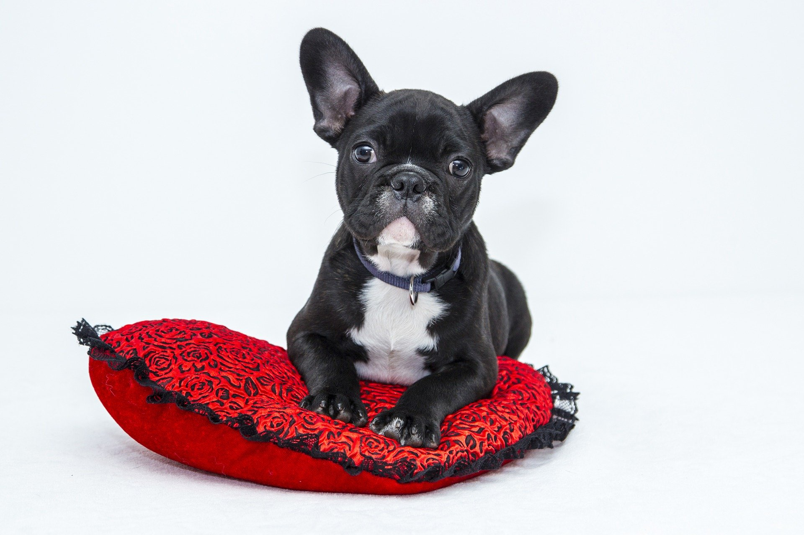
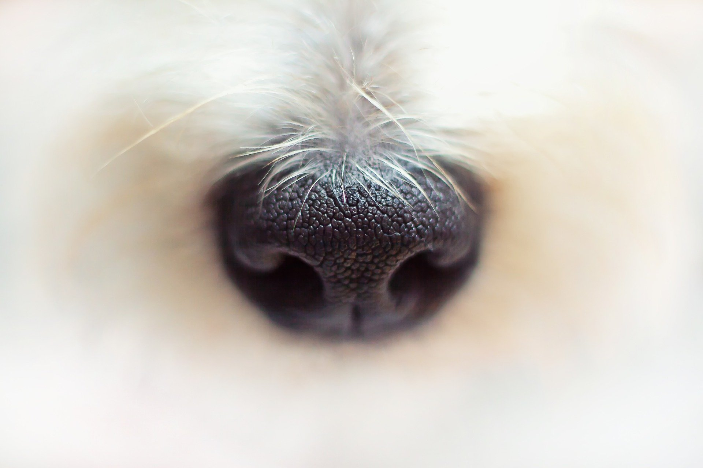

How Cute
Am I ?

COOL

Two studies, one published in the journal Current Biology and the other in Science, conclude that the answer is yes! Your dog might not understand everything you say, but he listens and pays attention similar to the way humans do. The researchers discovered that dogs — like humans — respond not only to the words we say to them, but also to the emotional tone of our voices.
Dogs like to go to the toilet as soon as they wake up, so make sure that you go outside with him as soon as you come downstairs. Introduce a bit of playtime once he has done his business, and maybe bring a couple of his favourite toys out with you to keep his attention
If you have decided to feed your dog two meals a day, this is the perfect time to give him his breakfast. This is also the best time to feed your dog his first meal of the day.
About half an hour after your dog has finished eating, take him outside for a brisk walk and another opportunity to go to the toilet. Typically dogs like to go to the toilet between 10 and 30 minutes after they have eaten. Adult dogs are better at holding it in, but puppies can really struggle.
This is when you either allow your dog to settle and rest just before you leave for work, or allow him to explore and amuse himself with some interactive toys as you get things done.
Ideally, most dogs would love for you to return home during your lunch break so that they can be let out to go to the toilet and spend some quality time exercising, playing and bonding with you. Replace your dog’s water for a fresh clean bowl. If you have a puppy, this is the best time to give him his midday meal.
Before you head back to work, make sure that you take your dog outside to relieve himself, otherwise you might be presented with a little treat when you arrive home. Encourage your dog to use some energy by introducing some play (and training if you have enough time), and then invite him back inside to calm down and rest - a crate is the most effective way of teaching a dog to calm down after exercise. To find out how to correctly crate train a dog or puppy follow this link to our crate training section
As soon as your return home from work, offer your dog a fresh, clean bowl of water. Now is also the best time to give your puppy or older dog his evening meal. Shortly after he has finished eating, take him outside to use all of the energy he has built up throughout the day. You can use this time to do some training - training to fetch, heel, come/recall, sit, stay, lie down.
Your dog will want to relieve himself one more time before he goes to bed. Take him outside to go to the toilet, but don’t offer any play. You dont want to get him too excited, otherwise you might struggle to get him to settle for bedtime. As you invite your pup back inside, reward calm behaviour so that he knows that it is time to rest. The most effective method of teaching a dog to calm or settle is crate training.